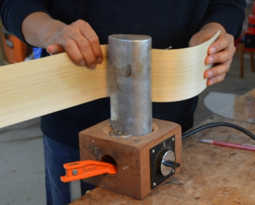
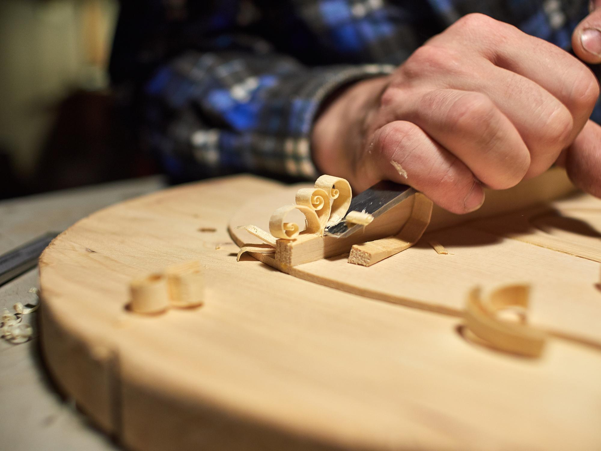
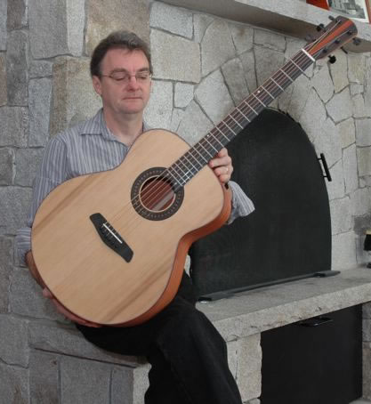
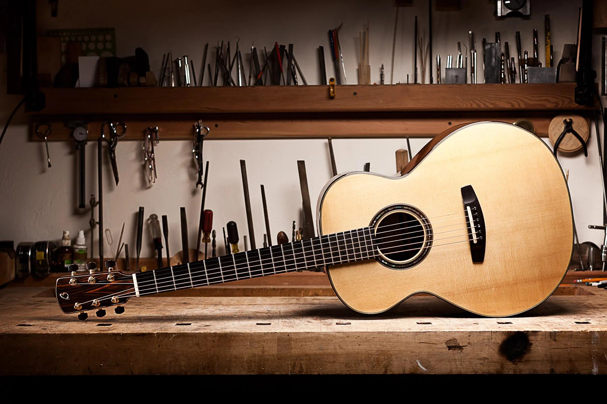

Vermont Instruments · Est. 1982
Make a guitar.
Make it yours.
A two-week, one-to-one guitar-building experience in the heart of Vermont. Learn the craft by building a beautiful acoustic instrument, by hand, from the first piece of wood to the final string.
Personal instruction · Materials included · On-site accommodation
Two weeks.
One extraordinary instrument.
Since 1982, George Morris has welcomed students into the world of guitar making through focused, hands-on workshops.
Work one-to-one with an experienced luthier and build a high-quality acoustic guitar from scratch. Choose a classical or steel-string model, explore materials, and learn the decisions and techniques that shape an instrument's sound, feel and character.
Ask about an upcoming workshop →
Traditional skill.
Practical knowledge.
Learn the care and use of essential hand tools, how wood behaves, practical acoustic theory, finishing, repair and jig-making strategies. No previous woodworking experience is required—just curiosity and a willingness to work with your hands.
- Build a complete acoustic guitar by hand
- Individual instruction with George Morris
- Materials and illustrated shop manual included
- Guidance for continuing the craft at home

The details make the instrumentBuild your own
acoustic guitar.
A focused two-week workshop for one student at a time, with instruction, materials, accommodation and a comprehensive illustrated shop manual included.

Learn directly
from George Morris.
George founded Vermont Instruments in January 1982. His work has taken him from the Guitar Research and Design Center in Vermont to consulting for Yamaha Guitars and teaching guitar making in Bali.
His approach brings together traditional hand-building knowledge, practical modern methods and a generous commitment to helping students continue their own work.
Read George's story →
A workshop and a home
in rural Vermont.
The school is located in Post Mills, a short walk from Lake Fairlee. The shop apartment above the workshop includes a bedroom, kitchen, bath and living space. Accommodation, Wi-Fi, kitchenware, bedding and laundry are included during the course.
Start a conversation
Curious about building
your own guitar?
Tell George what you'd like to make. No woodworking experience is necessary to begin the conversation.